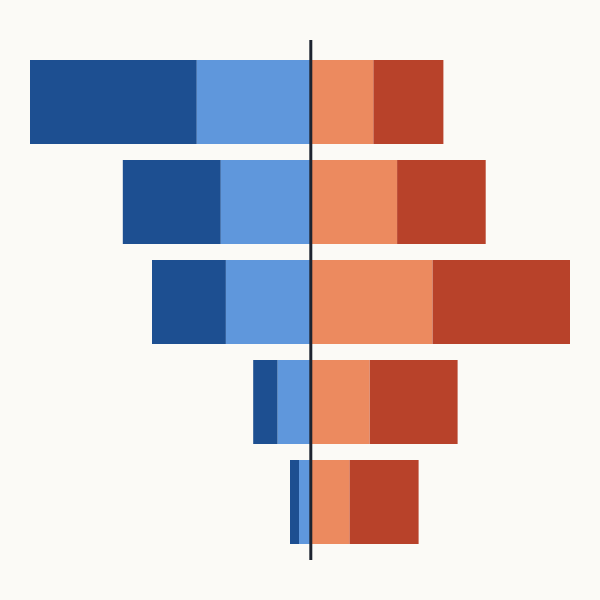
O galego por xeracións Pirámide da lingua ·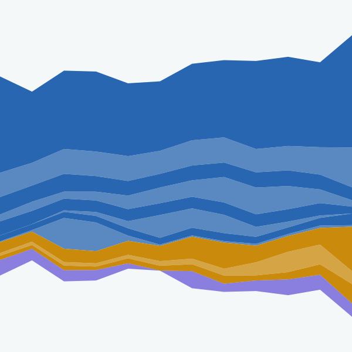
O mar nun prato Calendario e marea ·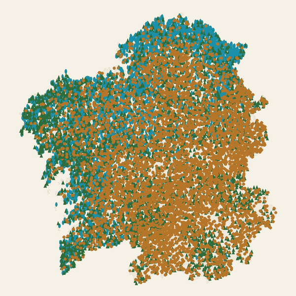
O monte de cada concello Mapa de árbores ·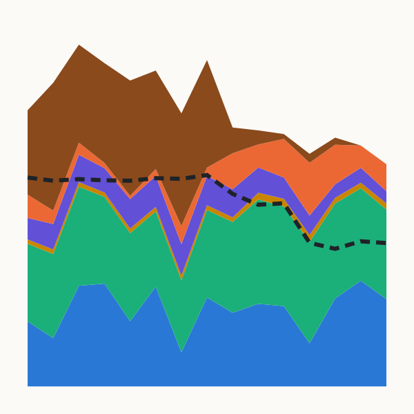
De onde vén a luz Diagrama de fluxos ·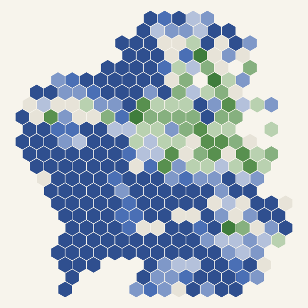
Hai máis vacas ca persoas? Cartograma de hexágonos ·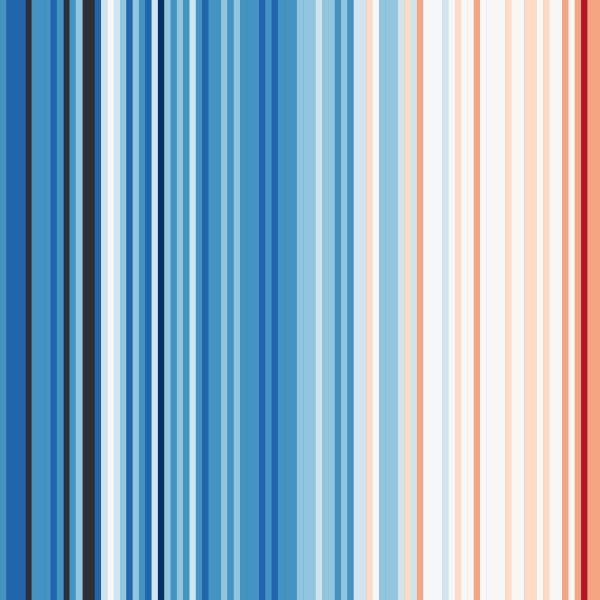
As raias da calor e da choiva Raias climáticas ·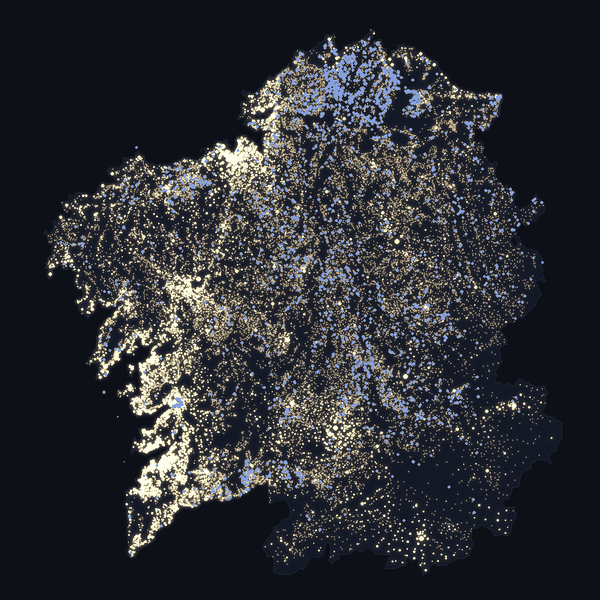
Galicia apágase Mapa de luces ·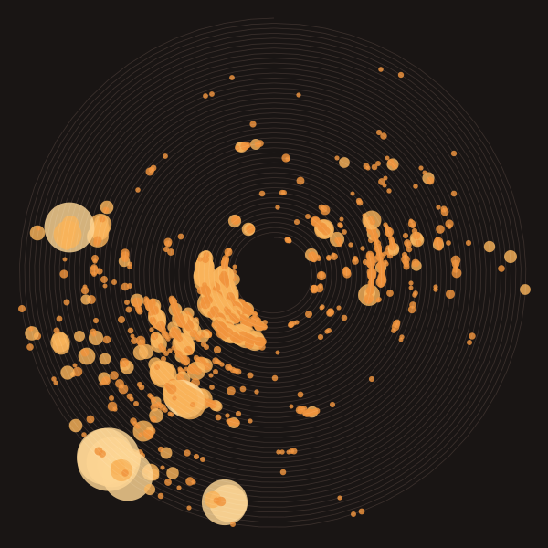
A espiral dos lumes Espiral ·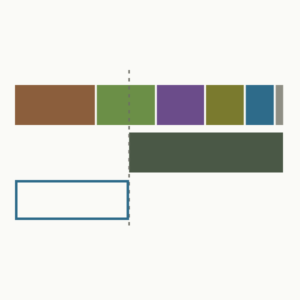
Que precisaría Galicia para chegar ao carbono neto cero? Folla de ruta ·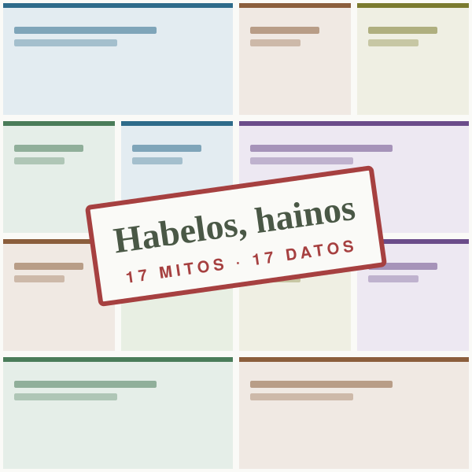
Habelos, hainos: mitos sobre Galicia e a sustentabilidade Mosaico interactivo ·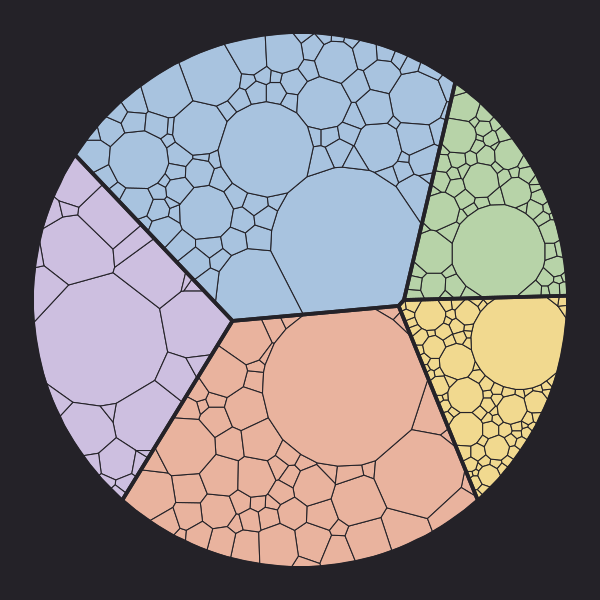
A Galicia de fóra xa é a terceira provincia Diagrama de Voronoi ·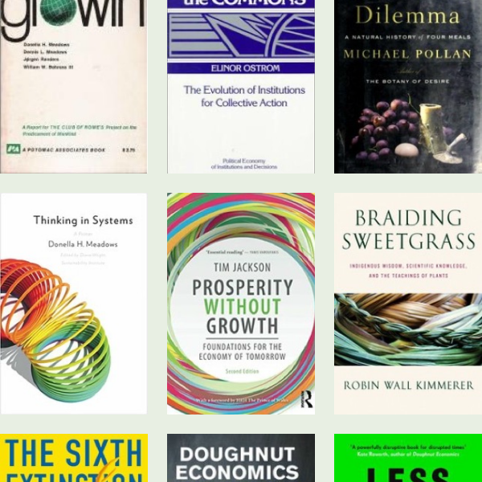
Biblioteca Sustentable Biblioteca ·Aínda non hai visualizacións con este tema.
Sobre Divulga
Pezas puntuais da Fundación Galicia Sustentable feitas con datos públicos. Cada visualización indica as súas fontes e a data dos datos.
Os contidos publícanse baixo licenza CC BY-NC-SA 4.0. Podes reutilizalos citando a fonte.